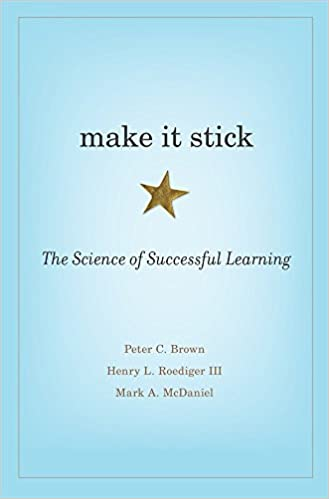

How to learn effectively¶
Nick Riches, October 2020¶
Why testing yourself is the key to learning¶
There is substantial research indicating that we learn best when we continually test our knowledge of a topic (Karpicke et al., 2009; Roediger & Karpicke, 2006). This effect is called the “testing effect”, and a learning strategy which depends on continually testing yourself is called “test-enhanced” learning. Amazingly, there is good evidence that the very act of testing yourself is beneficial, even if you do not successfully recall the relevant information (Kornell et al., 2015; Kornell & Vaughn, 2016; Vaughn et al., 2017). This is pretty extraordinary and suggests that time spent studying at your desk is never wasted, even if you are struggling to recall the material.
The way that you test yourself depends on the material you are learning. For example, if testing new words in a foreign language you could have a card with the word in your first language (e.g. English) on one side, and the word in the target language (e.g. French) on the other side. You can work your way through the pack, read the English word, try to recall the French word, and test your knowledge by turning over the card. You could also do this process in reverse, e.g. look at the French word, and try to translate this into English.
The more active we are in the way we test ourselves, the better we learn and retain the information. Regarding the flashcard example above, the more active form of learning is to read the English word, and try to recall the French word. However, though the alternative process, translating from French to English is less active, it may be beneficial in certain contexts, e.g. for quick revision.
Some forms of learning are much more abstract not amenable to flashcards. An example of this is your understanding of the word class Noun. You could revise this in a variety of ways, e.g.
- Provide a definition, but with a word missing, e.g.
A Noun is word which often refers to a ___ (thing). It is often preceded by a ___ (Determiner)
- Create a multiple choice question, e.g. In the following sentence, which of the following properties does not describe a Noun
- It takes the suffix -ing ✔
- It takes the suffix -s (in the regular form)
- It is often prceded by a detrminer
- Create an open-ended “list” question, e.g. “List three properties of a Noun” (Possible answers: it tends to refer to a thing, it inflects for plural, e.g. horses, it comes after a determiner, e.g. the horse, it “agrees” with a verb, e.g. the horse runs, the horses run_ etc.)
- Create a completely open-ended question, e.g. “What is a definition of a noun”?
Which of these you think promotes more active learning? Evidence suggests that the more open-ended questions lead to better learning because they involve active recall of the material rather than recognition of the right answer (Kang et al., 2007). This doesn’t mean that multiple-choice questions are bad for study – they can be very beneficial. For example, there are clear right or wrong answers, unlike open-ended questions, and this can help you decide whether you need to revise a particular topic. They are also less time-consuming than open-ended questions. A good revision strategy would probably contain a mix of different types of revision prompts, e.g. flashcards, multiple-choice questions, open-ended list questions, and completely open-ended questions.
Why note-taking is a key skill¶
Words are concrete and easy to test using flashcard systems. For other kinds of knowledge, e.g. abstract theories, flashcards are too crude and simplistic, so you’ll need to find other ways to test yourself. For example, you could write the key claims of the theory on a piece of paper, number these, and using the numbers as prompts try to recall each claim one by one. This kind of works, but it is clear that the more abstract and complex a knowledge domain becomes, the more difficult it is to think of ways to test yourself.
While you are thinking about clever procedures to test yourself on everything you need to know, just start taking some notes. Take a blank sheet of paper, or open up a note-taking app, and try to recall everything you need to know in note form. By taking notes you are having to actively recall and process the information you have learnt. For example, because you are incapable of rapidly writing down everything the lecturer says (unless you are a word-record typist or short-hand expert), you are having to identify the most important points when notetaking. Also, because human memory for linguistic form is generally weaker than our memory for linguistic meaning, you will have to write down the main points of the lecture in your own words, and in this way you are having to actively process the information.
An additional benefit of note-taking is that you can easily show the structure of the material you are learning using headings and subheadings. All of the material you learn will have some kind of structure, e.g. a theory might consist of three key arguments, and the ICF clinical framework consists of four areas of functioning. Lectures themselves will be organised into discrete sections. Moreover, there is evidence to suggest that information is more adequately processed and retained when it is explicitly integrated into a larger structure. For example the regular use of headings and subheadings in written passages helps the reader to read more quickly and accurately, and recall more information (Hyönä & Lorch, 2004; Lorch & Lorch, 1996; Sanchez et al., 2001).
However, while the information you are given fits into an overarching structure, the technology which is used to deliver lectures is not great for showing structure. Powerpoint does not show structure very well, as it invites the user to create a continuous chain of slides. Sometimes lecturers add “Table of Contents” slides, but this is not that widely practised. By making notes you can actually impose structure on the material you are learning, using headings and subheadings, and this will help you to learn that material.
The Cornell note-taking system¶
A good tried and tested note-taking system is called “Cornell Notes”, which was devised by Prof. Walter Pauk of Cornell University in the 1950s. If you do an internet search you will find loads of materials on this approach. Here is one link to start you off.
Why writing notes on slides may not be helpful¶
Lecturers often supply their students with handouts containing the slides. Many students write on these handouts, and believe that this is an appropriate way to learn. But what is the evidence that this is a good learning approach? Existing studies investigating the impact of slide-based handouts have found that students learn better without them (Kim, 2018; Worthington & Levasseur, 2015).
Why might this be the case? Firstly, if the slides contain a substantial amount of text, you are less likely to convert what you have learnt into your own words. Your notes will become shorter. They will become comments on the slides, rather than a full paraphrase of what you have just heard. Consequently, you will be learning in a more passive manner. Secondly, as mentioned above, it is quite difficult to signpost structure within slides. By contrast, if you make notes on a blank piece of paper it is easier to show structure by writing your own subheadings.
So, I just need to make good notes?¶
Yes, good note-taking is the place to start, but you also need to explore other ways to test yourself. As mentioned, flashcards may be very useful. For example, for anatomy, you could have a picture of a part of the body on one side, and the label on the other. You can look at the picture, and then attempt to recall the label. If you are correct, put it in the correct pile, and if you are incorrect, or cannot recall it, put it in the incorrect pile. There is quite interesting evidence to suggest that if you correctly recall something once, you are likely to recall it successfully in the future (Bahrick et al., 1993). Therefore, you can learn very efficiently just by repeatedly testing yourself on the items in the incorrect pile. Also, make sure that, when you test yourself, you do it at fairly widely-spaced intervals. This principle is known as “distributed learning” or the “spacing effect”, and there is a lot of evidence that it is beneficial for learning in an academic setting (Dempster, 1988).
Naturally, flashcards are only amenable to certain kinds of topics. For more abstract topics (e.g. Linguistics, Psychology), and you will need to find other ways to test yourself, e.g. by creating your own questions / prompts.
What to do with all this technology?¶
There is a whole host of technology out there for you to explore when it comes to taking notes, or creating flashcards. Below I have described a few apps that I am aware of, but there must be many more out there that I’ve missed;
Note-taking¶
OneNote – this has the advantage that it integrates well with other Microsoft products, e.g. emailing, calendar, and Teams
Notion (https://www.notion.so) – possibly the most widely used non-Microsoft note-taking app. It’s also great as a general organisational app. Its basic plan is free.
Roam Research (https://roamresearch.com) – High-concept, and slightly geeky app, frequently touted as “the next big thing”. It’s online only, and expensive, but students can get free plans.
Evernote (https://evernote.com) – Simple app, which works both online and locally
Apple Notes - If you are an Apple afficionado.
Flashcards¶
Quizlet (https://quizlet.com/en-gb) – online flashcard app.
Anki (https://apps.ankiweb.net) – open source cross-platform flashcard app. It has a bit of a steep learning curve.
All-in-one technologies¶
These are technologies which incorporate note-taking and flashcards in a single app. The idea is that you can use them to take notes, and quickly generate flashcards to test yourself.
Remnote (https://www.remnote.com) – Very user-friendly, online but also with a local app. It is explicitly designed for students. However, make sure you regularly back up your data to your local computer and don’t leave it sitting in the cloud (Remnote provides an easy way to do this).
Obsidian - (https://obsidian.md) - Very popular note-taking app with revision features incorporated via plugins.
Logseq (https://logseq.com) – Wonderful open-source notetaking and general organisational app. However, the learning curve is steeper than remnote. A big advantage is that you have complete ownership of your data.
Roam Research – As mentioned above. Roam also has good tools for creating question banks.
Further reading¶
“Make it stick: the science of succesful learning” (Brown, Roediger III, McDaniel) is a popular science book written by leading experts in the field which covers many of the above ideas, e.g. test-enhanced learning, distributed practice. The website which accompanies the book (https://www.retrievalpractice.org/make-it-stick) also contains lots of really cool infographics to demonstrate the main ideas. Check it out!

General bibliography¶
Bahrick, H., Bahrick, L., Bahrick, A., & Bahrick, P. (1993). Maintenance of foreign language vocabulary and the spacing effect. Psychological Science, 4, 316–321.
Dempster, F. (1988). Informing classroom practice: What we know about several task characteristics and their effects on learning. Contemporary Educational Psychology, 13, 254–264.
Hyönä, J., & Lorch, R. F. (2004). Effects of topic headings on text processing: Evidence from adult readers’ eye fixation patterns. Learning and Instruction, 14(2), 131–152. https://doi.org/10.1016/j.learninstruc.2004.01.001
Kang, S. H. K., McDermott, K. B., & III, H. L. R. (2007). Test format and corrective feedback modify the effect of testing on long-term retention. European Journal of Cognitive Psychology, 19(4–5), 528–558. https://doi.org/10.1080/09541440601056620
Karpicke, J. D., Butler, A. C., & Roediger III, H. L. (2009). Metacognitive strategies in student learning: Do students practise retrieval when they study on their own? Memory, 17(4), 471–479. https://doi.org/10.1080/09658210802647009
Kim, H. (2018). Impact of slide-based lectures on undergraduate students’ learning: Mixed effects of accessibility to slides, differences in note-taking, and memory term. Computers & Education, 123, 13–25. https://doi.org/10.1016/j.compedu.2018.04.004
Kornell, N., Klein, P. J., & Rawson, K. A. (2015). Retrieval attempts enhance learning, but retrieval success (versus failure) does not matter. Journal of Experimental Psychology: Learning, Memory, and Cognition, 41(1), 283–294. https://doi.org/10.1037/a0037850
Kornell, N., & Vaughn, K. E. (2016). How Retrieval Attempts Affect Learning. In Psychology of Learning and Motivation (Vol. 65, pp. 183–215). Elsevier. https://doi.org/10.1016/bs.plm.2016.03.003
Lorch, Jr., Robert F., & Lorch, E. P. (1996). Effects of Headings on Text Recall and Summarization. Contemporary Educational Psychology, 21(3), 261–278. https://doi.org/10.1006/ceps.1996.0022
Roediger, H. L., & Karpicke, J. D. (2006). Test-Enhanced Learning. Taking Memory Tests Improves Long-Term Retention. 249–255. https://doi.org/doi:10.1111/j.1467-9280.2006.01693.x
Sanchez, R. P., Lorch, E. P., & Lorch, R. F. (2001). Effects of Headings on Text Processing Strategies. Contemporary Educational Psychology, 26(3), 418–428. https://doi.org/10.1006/ceps.2000.1056
Vaughn, K. E., Hausman, H., & Kornell, N. (2017). Retrieval attempts enhance learning regardless of time spent trying to retrieve. Memory, 25(3), 298–316. https://doi.org/10.1080/09658211.2016.1170152
Worthington, D. L., & Levasseur, D. G. (2015). To provide or not to provide course PowerPoint slides? The impact of instructor-provided slides upon student attendance and performance. Computers & Education, 85, 14–22. https://doi.org/10.1016/j.compedu.2015.02.002